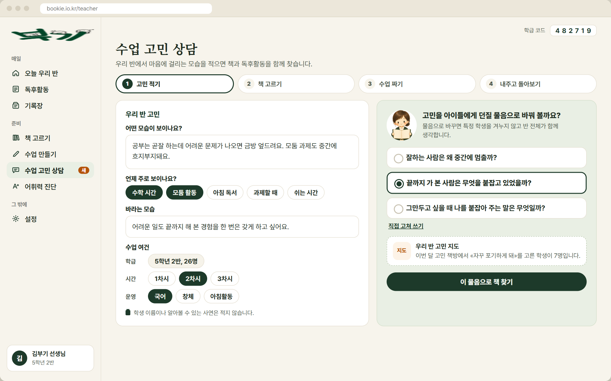

T1
고민 적기
막연한 고민을 수업에서 다룰 물음으로 바꿈
- 입력보이는 모습, 드러나는 때(칩), 바라는 모습, 수업 여건(학급은 자동, 1~3차시, 국어 창체 아침활동)
- 물음 바꾸기AI가 물음 세 개를 제안, 고르거나 직접 고쳐 씀
- 고민 지도 연결같은 주제를 고른 학생 수가 있으면 함께 보임(T5)
- 지키는 것학생 이름 적지 않기 안내, 진단하는 말 쓰지 않음, 고민 글은 교사 브라우저에만 저장
- 지금 부기채팅형 기본판 구현(부기2 개발판). 칸 나눈 입력과 물음 바꾸기는 새로 만듦